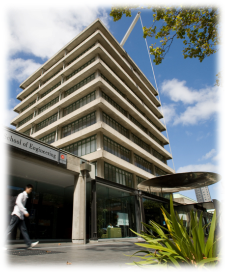
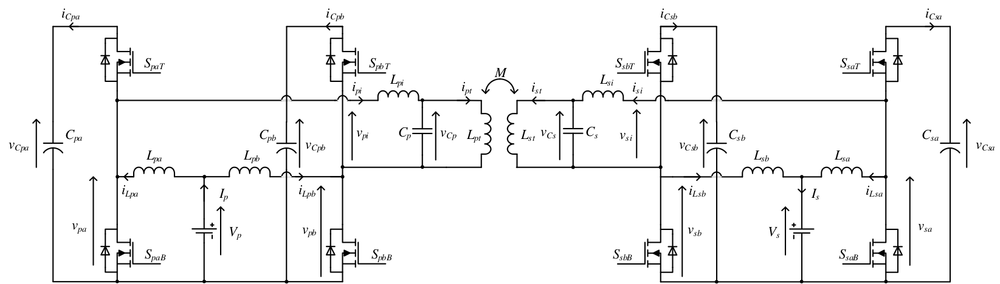
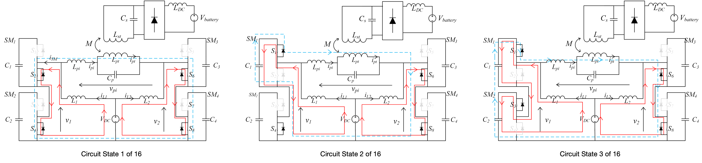

class: title-slide count: false .logo-title[] # EV Chargers ### Current Status and Future Directions .TitleAuthor[Duleepa J Thrimawithana] --- layout: true name: template_slide .logo-slide[] .footer[Duleepa J Thrimawithana, Department of Electrical, Computer and Software Engineering (2019)] --- # New Zealand .center[ <video width="980" height="420" controls> <source src="Travel New Zealand in a Minute.mp4" type="video/mp4"> </video> ] --- # The University of Auckland - Highest ranked New Zealand university and 85th in the QS World University Ranking - Over 5,000 staff members and 40,000 students - Nine faculties including Medical & Health Sciences, Engineering, Business & Economics and Science .center[<img src="img/UoAMap.png" height="300">] --- # Dept. of Electrical, Computer & Software Eng. .left-column[ - One of the 5 deparments in the Faculty of Engineering - Offers 3 undergraduate degree programs - Electrical & Electronics, Computer Systems and Software - Project based teaching - 35+ full-time academic staff members and 15+ post-doctoral research fellows - 150+ postgraduate students and 600+ undergraduate students - Regular visiting research scholars and research students - Research groups include Power Electronics, Power Systems, Signal Processing, Robotics, Embedded Systems, Parallel Computing, Telecommunications and Control Systems ] .right-column[  ] --- # Dept. of Electrical, Computer & Software Eng. .center[<img src="img/EngBuild.png" height="400">] --- # Power Electronics Research Group .center[<img src="img/PEGROUP.gif" height="430">] --- # Engineering Education .center[ <video width="720" height="420" controls> <source src="EVolocity Recruitment Video - Updated Aug 18.mp4" type="video/mp4"> </video> ] --- class: title-slide layout: false count: false .logo-title[] # Introduction ### Plug-in vs Wireless Charging --- layout: true name: template_slide .logo-slide[] .footer[[Duleepa J Thrimawithana](https://www.linkedin.com/in/duleepajt), Department of Electrical, Computer and Software Engineering (2019)] --- # Plug-in vs Wireless Charging .center[] - Wireless chargers are convinient and provide a ubiquitous connection between EVs and the grid - Ideal for autonomous vehicles and V2G services - Plug-in chargers are cheaper, have higher power density and employ mature technology - Provide an economical and reliable solution - Wireless chargers are safer under harsh weather and usage - Can operate safely under rainy/snowy/dusty/etc conditions - Wired chargers do not generate strong fields - Wireless chargers require FOD and LOP circuitry to ensure safety during operation --- # Components of a Wireless Charger .center[<img src="img/IPTConcSys.png" height="150px">] - Primary consists of a DC-AC switched-mode converter, a compensation network and a transmitter coil(s) - A lumped transmitter coil is often referred to as a primary pad/coil/coupler - An elongated coil is often called a primary track - Can be directly fed by a DC-bus or through a grid-connected AC-DC converter - Secondary/pick-up consists of a receiver coil(s), a compensation network and an AC-DC converter - The reciever coil is is often referred to as a secondary/pick-up pad/coil/coupler - Primary and pick-up coils are magnetically coupled but the coupling coefficient is typically less than 40% - The compensation networks help improve efficiency by minimizing the VA requirements of converters --- # Current Status of Wireless Chargers - Uni or bi-directional power flow - Primary may use a full-bridge, half-bridge, push-pull, multi-level or matrix based converter topology - Pick-up may use a boost, buck, full-bridge, half-bridge or push-pull topology - Control techniques that facilitate ZVS/ZCS over a wide range of conditions - Compensation for both sides is provided through series, parallel or a combination of series-parallel tuned networks - Power ratings up to tens of kWs - Magnetic designs include circular coil, solenoidal coil, polarised coil, multi coil structures as well as track based systems - Ferrites and/or reflection coils are often used to shape the magnetic fields generated - Transmission range of over 400 mm with over ± 200 mm XY tolerance - Efficiency typically over 85% but can be as high as 97% - Operating frequency typically ranges from tens of kHz to tens of MHz --- # Components of a Plug-in Charger .center[] - A PFC stage, a grid-tie inverter or a DC-bus utilised to interface with the grid - Safety isolation through high-frequency transformer preferred, specially in fast and extreme fast chargers - Hard-switched, soft-siwtched or resonant converter topologies are employed to implement the DC-DC converter - LLC and series resonant converters are common in uni-directional systems - DABs are common in bi-directional systems - Integrated on-board charger designs, which reuse components of the traction system has been proposed --- # LLC Resonant Converter .center[] - One of the most popular topologies used in isolated DC-DC converters - Higher efficiency and power density - The full-bridge converter generates a square-wave `\(V_{pi}\)` at a frequency close to the resonance between `\(L_{pi}\)` and `\(C_{pi}\)` - Output typically regulated through controlling the switching frequency - Designed to operate in the inductive region to ensure soft-switching --- # Series Resonant Converter .center[] - A popular and simple topology used in isolated DC-DC converters - Good efficiency - The full-bridge converter generates a `\(V_{pi}\)` at a frequency close to the resonance between `\(L_{pi}\)` and `\(C_{pi}\)` - Output typically regulated through controlling the switching frequency and/or phase-shift modulation - Designed to soft-switch under a range of loading conditions --- # Dual Active Bridge .center[] - A popular topology used in isolated bi-directional DC-DC converters - `\(L_{pi}\)` can be the leakage indutance of the isolation transformer - The full-bridge converters generate `\(V_{pi}\)` and `\(V_{si}\)` typically at a fixed frequency `\(f_{s}\)` - Designed to soft-switch under a range of loading conditions - VA requirements of the full-bridges must be minimised - Typically the amplitudes of `\(V_{pi}\)` and `\(V_{si}\)` as well as the phase-angle, `\(\theta\)`, between them are controlled to regulate the power flow --- # Control of DAB .center[<img src="img/PShiftGen.png" height="230px">] - Each leg of a full-bridge operated at 50% duty-cycle, generating for example the square-waves `\(v_{pa}\)` and `\(v_{pb}\)` - The phase-shift modulation, `\(\phi_{p}\)`, applied between `\(v_{pa}\)` and `\(v_{pb}\)`, regulates the magnitude of the fundamental component of `\(v_{pi}\)`, since `\(v_{pi}=v_{pa}-v_{pb}\)` - Phase-shift modulation applied to each converter as well as phase-angle of `\(V_{si}\)` with respect to `\(V_{pi}\)` is used to regulate the power flow magnitude and direction while minimising losses --- # Modelling a DAB .left-column[ - Noting that `\( \omega_s = 2 \pi f_s\)`, `\(v_{pi}\)` and `\(v_{si}\)` can be given by \\[ v\_{pi} = V\_{in} \frac {4} {\pi} \sum\_{m=1,3,..}^{\infty} \frac {\sin \left( m \phi\_p/2 \right)} {m} \sin \left( m \omega\_s t \right) \quad \\] \\[ v\_{si} = V\_{out} \frac {4} {\pi} \sum\_{m=1,3,..}^{\infty} \frac {\sin \left( m \phi\_s/2 \right)} {m} \sin \left( m \omega\_s t + m \theta \right) \quad \\] - Power transferred to the load is therefore \\[ P\_{o} = \frac {-8V\_{in}V\_{out}} {N \pi^2 \omega\_s L\_{pi(eq)}} \sin \left( \theta \right) \sin \left( \phi\_p/2 \right) \sin \left( \phi\_s/2 \right) \\] ] .right-column[ ] --- class: title-slide layout: false count: false .logo-title[] # Research Advances ### Highlights & Updates --- layout: true name: template_slide .logo-slide[] .footer[Duleepa J Thrimawithana, Department of Electrical, Computer and Software Engineering (2019)] --- # LCL Resonant Dual Active Bridge .center[] - An LCL T-resonant network is used to minimise the VA requirements of the converters - `\(L_{pt}\)` can compose of the leakage indutance of the isolation transformer - Series blocking capacitors, `\(C_{pi}\)` and `\(C_{si}\)`, can be part of the resonant network - The full-bridge converters generate `\(V_{pi}\)` and `\(V_{si}\)` typically at a fixed frequency `\(f_{s}\)` close to the resonant frequency of the LCL network - Designed to soft-switch under a range of loading conditions - Typically the amplitudes of `\(V_{pi}\)` and `\(V_{si}\)` as well as the phase-angle, `\(\theta\)`, between them are controlled to regulate the power flow --- # Control of LCL-RDAB - Phase-shift modulation applied to each converter as well as phase-angle of `\(V_{si}\)` with respect to `\(V_{pi}\)` is used to regulate the power flow magnitude and direction while minimising losses - Alternatively, the duty-cycle modulation applied, can be used to regulate the magnitude `\(V_{pi}\)` and `\(V_{si}\)` - For example, since `\(v_{pi}=v_{pa}-v_{pb}\)`, when `\(v_{pa}\)` and `\(v_{pb}\)` are `\(180^0\)` out of phase `\(D_{p}\)` controls magnitude of `\(V_{pi}\)` - When `\(D_{p} = 50\%\)`, `\(V_{pi}\)` is a maximum .center[] --- # Modelling a LCL-RDAB .left-column[ - The LCL T-Network is tuned such that `\( \omega_s L_{pt(eq)} = 1 / \omega_s C_{pt} \)` `\( = \omega_s L_{pi(eq)} \)`, where `\( \omega_s = 2 \pi f_s\)` - Noting that `\(\phi_{p/s} \equiv 2 \pi (1-D_{p/s}) \textrm{ or } 2 \pi D_{p/s} \)`, bridge currents are \\[ i\_{pi} = \frac {4V\_{out}} {N \pi \omega\_s L\_{pt(eq)}} \sin \left( \phi\_s/2 \right) \cos \left( \omega\_s t + \theta \right) \\] \\[ i\_{si} = \frac {4V\_{in}} {N \pi \omega\_s L\_{pi(eq)}} \sin \left( \phi\_p/2 \right) \cos \left( \omega\_s t \right) \\] - Power transferred to the load is therefore \\[ P\_{o} = \frac {-8V\_{in}V\_{out}} {N \pi^2 \omega\_s L\_{pi(eq)}} \sin \left( \theta \right) \sin \left( \phi\_p/2 \right) \sin \left( \phi\_s/2 \right) \\] ] .right-column[ ] --- # CLC Resonant Dual Active Bridge .center[] - A CLC T-resonant network is used to minimise the VA requirements of the converters - The magnitizing inductance, `\(L_{pt}\)`, is a part of the resonant network - `\(L_{pi}\)` can compose of the leakage indutance of the isolation transformer - The full-bridge converters generate `\(V_{pi}\)` and `\(V_{si}\)` typically at a fixed frequency `\(f_{s}\)` close to the resonant frequency of the CLC network - Designed to soft-switch under a range of loading conditions - Typically the amplitudes of `\(V_{pi}\)` and `\(V_{si}\)` as well as the phase-angle, `\(\theta\)`, between them are controlled to regulate the power flow --- # Modelling a CLC-RDAB .left-column[ - The LCL T-Network is tuned such that `\( \omega_s L_{pt} = 1 / \omega_s C_{pi(eq)} \)` `\( = 1 / \omega_s C_{si(eq)} \)`, where `\( \omega_s = 2 \pi f_s\)` - Noting that `\(\phi_{p/s} \equiv 2 \pi (1-D_{p/s}) \textrm{ or } 2 \pi D_{p/s} \)`, bridge currents are \\[ i\_{pi} = \frac {-4V\_{out}} {N \pi \omega\_s L\_{pt}} \sin \left( \phi\_s/2 \right) \cos \left( \omega\_s t + \theta \right) \\] \\[ i\_{si} = \frac {-4V\_{in}} {N \pi \omega\_s L\_{pt}} \sin \left( \phi\_p/2 \right) \cos \left( \omega\_s t \right) \\] - Power transferred to the load is therefore \\[ P\_{o} = \frac {8V\_{in}V\_{out}} {N \pi^2 \omega\_s L\_{pi(eq)}} \sin \left( \theta \right) \sin \left( \phi\_p/2 \right) \sin \left( \phi\_s/2 \right) \\] ] .right-column[ ] --- # Boost Active Bridge (BAB) .left-column[ - Integrated post/pre regulation capabilities enable maximum efficiency tracking - Wide ZVS range and reduced current stresses - Ensures zero DC-bias at AC output - As an example consider the 7.7 kW IPT system below  ] .right-column[.right[ <img src="img/BAB_W1.png" width="310px"> <img src="img/BAB_W2.png" width="310px"> ]] --- # An Integrated BAB .left-column[ - Boost inductors may be integrated in to the transformer - Flux generated by DC currents oppose each other - Both converters may be controlled to maintain a nearly constant efficiency - As an example consider the 7.7 kW IPT system below .center[<img src="img/IBAB_Conv.png" height="200px">] ] .right-column[ <img src="img/IBAB_W1.png" width="350px"> <img src="img/IBAB_W2.png" width="350px"> ] --- # Integrated Boost MC (IB-MC) .left-column[ - Derives a higher voltage to improve power handling - Reduces current stress and may suit lower DC-links - Inherantly eliminates circulating currents - Can generate a low THD staircase modulated output voltage - Wide range of voltages - Can use lower voltage higher performance devices  ] .right-column[ <img src="img/IBMMC_Vpi.gif" width="275px"> ] --- # IB-MC Example: 7.7kW IPT .left-column[ <img src="img/IBMMC_W.gif" width="700px"> ] .right-column[ - Maintains a constant 7.7 kW power transfer through primary control - Operate in 5-level mode at low k and 3-level mode at high k - Efficiency ranges between 91.5% and 92.4% across entire operating region - A simple algorithm used to ensure module voltages are balanced ] --- # IB-MC Example: 3kW Wireless Slipring .center[] --- # Ongoing Research Work .left-column[ - Bi-directional IPT systems - Synchronisation & optimal control - Novel circuit topologies - Misalignment tolerant high-power IPT systems - Compensation topologies & control techniques - Dynamic charging - Circuit topologies & control techniques - Power distribution, thermal and packaging - High-power plug-in chargers - Novel circuit topologies and control techniques - Grid integration of EV chargers - Circuit topologies for grid services - EMC ] .right-column[ <img src="img/Prtos.gif" width="350px"> ] --- class: title-slide layout: false count: false .logo-title[] # Questions? ### Thank you